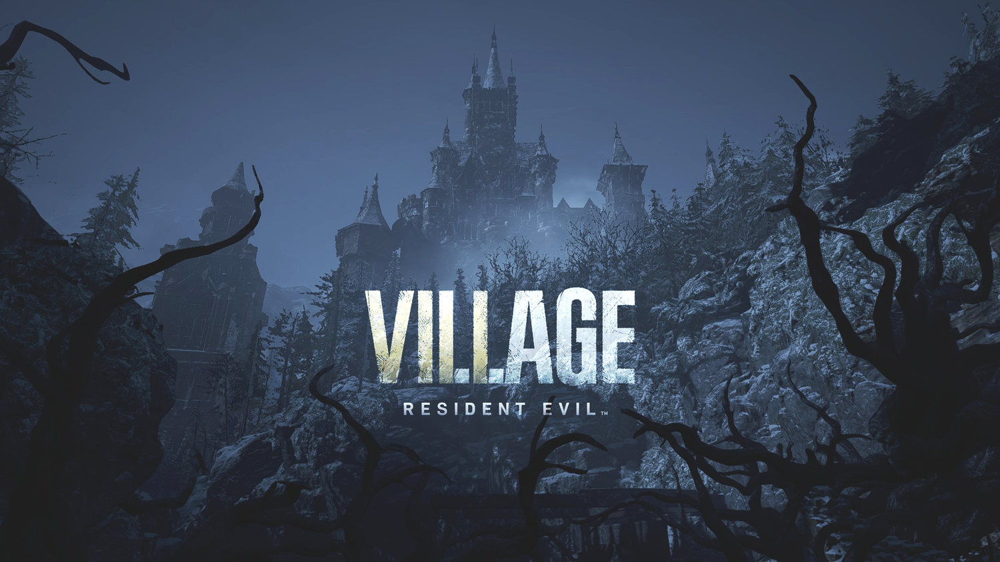

Resident Evil Village (2021) Protagonistas: Ethan Winters e Chris Redfield Ameaça Principal: Mãe Miranda, os Quatro Lordes e o Megamiceto (Mofo) Resumo: Três anos após Resident Evil 7, Ethan Winters vive em paz na Europa com sua esposa Mia e sua bebê Rose. A tragédia ataca quando Chris Redfield invade sua casa, aparentemente mata Mia e sequestra Rose. Ethan desperta na neve próximo a um vilarejo gótico dominado por lobisomens (Lycans) e governado pela Mãe Miranda e seus Quatro Lordes (como a gigante Lady Dimitrescu e o engenheiro Heisenberg). Ethan descobre que sua filha foi dividida e preservada em frascos. Para salvá-la, ele caça e mata cada um dos Lordes. Em uma reviravolta, Ethan descobre que foi morto em RE7 e que seu corpo é inteiramente composto pelo fungo mutagênico Megamiceto. Ele usa suas forças finais para derrotar Miranda e se sacrifica detonando uma bomba para destruir o fungo, permitindo que Chris fuja de helicóptero com Rose (e uma Mia resgatada) em segurança.